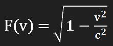

Рассмотрим эксперимент №1 согласно общей теории относительности, представленный на рисунке 1, относительно объекта 1 (о1) – (рисунок 1.1) и относительно объекта 2 (о2) – (рисунок 1.2).
В :
о1 всегда покоится
фаза 1: о2 покоится
фаза 2: о2 ускоряется (с ускорением a)
фаза 3: о2 движется (со скоростью v)
фаза 4: о2 тормозит (с ускорением -a)
фаза 5: о2 ускоряется (с ускорением -a)
фаза 6: о2 движется (со скоростью -v)
фаза 7: о2 тормозит (с ускорением a)
фаза 8: о2 покоится
В :
о2 всегда покоится
фаза 1: о1 покоится
фаза 2: о1 ускоряется (с ускорением -a)
фаза 3: о1 движется (со скоростью -v)
фаза 4: о1 тормозит (с ускорением a)
фаза 5: о1 ускоряется (с ускорением a)
фаза 6: о1 движется (со скоростью v)
фаза 7: о1 тормозит (с ускорением -a)
фаза 8: о1 покоится
Получаем согласно общей теории относительности:
- в будет наблюдаться замедление времени на часах о2 (в сравнении с часами о1);
- в будет наблюдаться замедление времени на часах о1 (в сравнении с часами о2).
В действительности:
На одних часах пройдет меньший интервал времени, чем на других (хотя возможен один случай, когда часы о1 и о2 покажут одно и тоже время). Фактически одни часы показывают меньшее время, чем другие для обоих наблюдателей (каждый наблюдатель неразрывно связан со своим объектом).
Возникает вопрос:
Какие из часов будут показывать меньшее время (меньший интервал времени)?
Данный парадокс ученые пытаются объяснить разными способами, но такие домыслы не относятся к теории относительности и ее математическому представлению, а используют дополнительную информацию, не относящуюся к теории относительности. Ключевым моментом является тот факт, что теория относительности и ее математический аппарат являются самодостаточными и обязаны работать без дополнений для любых случаев, включая парадокс близнецов, чего не происходит.
Теперь рассмотрим другой эксперимент, представленный на рисунке 2, согласно общей теории относительности. Сразу нужно отметить, что время ускорений объектов много меньше времени движения объектов с постоянными скоростями (это условие необходимо для исключения спекуляций о влиянии ускорений объектов на результаты). В фазе 1 часы всех наблюдателей синхронизированы (показывают одно и тоже время). dt – промежуток времени, проведенный объектами в данной фазе по часам объекта с которым связана система отсчета.
Очевидно, что в какой бы системе отсчета не находились наблюдатели (о1, о2, о3), при непосредственном наблюдении итоговых показаний приборов (фаза 7) все они увидят один и тот же результат (этот факт подтверждается всеми экспериментами). То есть каждый наблюдатель видит одни и те же показания на одних и тех же часах (один физический объект – часы, показывают одно и тоже время для всех).
Однако согласно общей теории относительности это будет не так, каждый наблюдатель должен видеть разные показания на одних и тех же часах. Что же именно должны видеть наблюдатели согласно общей теории относительности?
Наблюдатель о1:
часы о1: = t + t + t + 1.5t = 4.5t;
часы о2: = t + F(v)t + F(v)t + 1.5t = 2.5t + 2F(v)t;
часы о3: = F(v)t + F(v)t + F()t + 1.5F(v)t = F()t + 3.5F(v)t;
> >
Наблюдатель о2:
часы о1: = t + F(v)t + F(v)t + 1.5t = 2.5t + 2F(v)t;
часы о2: = t + t + t + 1.5t = 4.5t;
часы о3: = F(v)t + t + F()t + 1.5F(v)t = t + F()t + 2.5F(v)t;
> >
Наблюдатель о3:
часы о1: = F(v)t + F(v)t + F()t + 1.5F(v)t = F()t + 3.5F(v)t;
часы о2: = F(v)t + t + F()t + 1.5F(v)t = t + F()t + 2.5F(v)t;
часы о3: = t + t + t + 1.5t = 4.5t;
> >
, где , а △T - фактически показывают сколько времени прошло между моментом расставания (фаза 1) и моментом встречи (фаза 7) согласно общей теории относительности.
Как видно согласно общей теории относительности они должны наблюдать абсолютно разные показания на одних и тех же часах, что противоречит действительности.
В результате согласно общей теории относительности, нельзя сказать какой из объектов в действительности двигался и, соответственно, какие из часов будут показывать меньшее время (качественный фактор).
Кроме того, согласно общей теории относительности нельзя также сказать насколько будут в действительности различаться показания часов (количественный фактор).
Это означает, что теория относительности противоречит действительности.
Комментарии